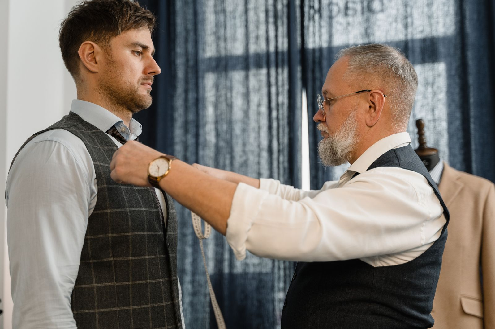
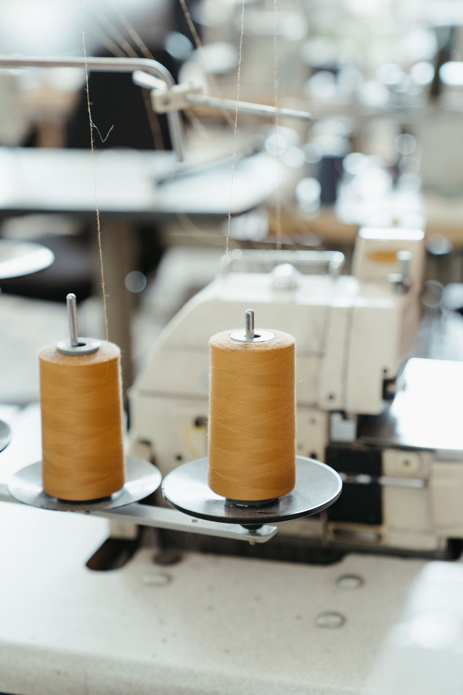

Betanzos, A Coruña · taller propio · desde 2006
Lo que se ve de una chaqueta es la mitad
La otra mitad está por dentro: la entretela que le da forma al pecho, la hombrera que no se nota, el forro cosido a mano en el bajo. Eso es lo que decide cómo cae una chaqueta a los cinco años, y es exactamente lo que no se ve al probártela.
- Horas por chaqueta
- 60
- Medidas que se toman
- 22
- Pruebas
- 3
01 El revés
Dale la vuelta a la chaqueta
Esta es la misma chaqueta del principio, girada. Lo de dentro no se enseña nunca y es lo único que distingue una chaqueta a medida de una comprada: si le quitas esto, por fuera sigue igual durante seis meses.
Estás viendo el derecho. Gírala para ver por dónde se sostiene.
- 1 Entretela de pecho Pelo de camello y crin, cosida con puntada de pique, no pegada con plancha. Es lo que hace que la solapa vuelva a su sitio sola y lo que se despega en una chaqueta barata a los dos inviernos.
- 2 Hombrera Cuatro milímetros de guata, moldeada a mano sobre el hombro concreto de cada persona. Si se nota que la llevas, está mal puesta.
- 3 Sisa y cabeza de manga La sisa se monta alta y pequeña para poder levantar el brazo sin que suba toda la chaqueta. Es la costura que más tiempo lleva y la que más se nota al moverse.
- 4 Bolsillo interior Ribeteado y rematado a mano, con la etiqueta cosida dentro: nombre, fecha y número de encargo. Sirve para los arreglos de dentro de diez años.
- 5 Ojal de la solapa Hecho a mano con seda, en unos cuarenta minutos. Una máquina lo hace en veinte segundos y se distingue a un metro.
- 6 El bajo y el forro El forro va cosido a mano en el bajo, con holgura, para que la lana se mueva por dentro y no tire. Es lo que permite sacar o meter el largo sin rehacer nada.
02 Sesenta horas
En qué se van sesenta horas
Un traje a medida cuesta lo que cuesta porque son sesenta horas de taller repartidas en unas ocho semanas. Cada cuadrado es una hora. No hay ninguna manera de que sean quince.
- Patrón y corte6 h
- Entretela de pecho9 h
- Hombros y cuello6 h
- Mangas y sisas8 h
- Ojales a mano5 h
- Forro y bolsillos7 h
- Las tres pruebas8 h
- Pantalón5 h
- Planchado y remate6 h
60 horas en total, de las cuales veintiséis se hacen a mano.
03 Las pruebas
Tres veces delante del espejo
-
Semana 2
Prueba de baste
La chaqueta llega hilvanada con hilo blanco y sin mangas puestas. Da miedo verla, y es la prueba que más cambia: aquí se mueve el equilibrio, se sube o se baja el cuello y se decide el largo.
-
Semana 5
Prueba de forma
Ya tiene mangas, entretela y bolsillos marcados. Se afina la sisa, se ajusta la cintura y se mira cómo cae con los brazos en movimiento, no de pie y quieto.
-
Semana 8
Prueba final
Forro cosido, ojales hechos y botones puestos. Aquí solo se corrigen milímetros. Si en esta prueba hay que cambiar algo grande, es que falló la primera.
Si vives lejos, las tres pruebas se pueden juntar en dos viajes, pero el resultado no es el mismo y conviene decirlo antes de empezar, no después.

04 Sin rodeos
Qué se hace aquí y qué no
En este oficio hay tres palabras que se usan como si fueran la misma —a medida, semi-medida y confección— y la diferencia son miles de euros. Aquí está escrito cuál se hace.
- Sí: traje a medida con patrón propioSe corta un patrón para ti, desde cero, y se hace en el taller de arriba. Ocho semanas y tres pruebas.
- Sí: semi-medida, y se dice que lo esSe parte de un patrón base y se adapta. Cuesta bastante menos, tarda cuatro semanas y lleva una sola prueba. No se vende como a medida.
- No: trajes en cuarenta y ocho horasNo existen. Lo que se entrega en dos días es una prenda de talla con el bajo cogido.
- No: títulos ni escuelas que no se puedan comprobarEn esta plantilla de demostración no se cuelga ningún diploma, ningún premio ni ningún taller famoso por el que se haya pasado. El aviso legal explica qué iría en ese hueco en un caso real.
- No: fotos de trabajos que no son nuestrosLas tres fotografías de esta página son de archivo y lo dicen en su pie. Un sastre de verdad pondría aquí las suyas.

05 Precios
Lo que cuesta y lo que tarda
| Prenda | Plazo | Desde |
|---|---|---|
| Traje a medida, dos piezas | 8 semanas · 3 pruebas | 1650 € |
| Traje a medida, tres piezas | 9 semanas · 3 pruebas | 2100 € |
| Chaqueta sola | 7 semanas · 3 pruebas | 1150 € |
| Traje de semi-medida | 4 semanas · 1 prueba | 790 € |
| Pantalón | 3 semanas · 1 prueba | 320 € |
| Camisa a medida | 4 semanas · 1 prueba | 140 € |
Precios de muestra para esta demostración. «Desde» quiere decir con las lanas de entrada: un tejido de más precio sube el total entre 200 y 900 €, y se dice antes de cortar, no al entregar. Los arreglos de las prendas hechas aquí no se cobran nunca.

06 El taller
Dos personas y una mesa de corte
El taller lo llevan Amador Vilariño, que corta y prueba, y Nuria Pardo, que hace pantalones y chalecos. Abrieron en 2006 en un primer piso de la Rúa dos Ferreiros, encima de donde estaba la mercería.
No hay tienda: hay una mesa de corte, dos máquinas y un espejo. Se viene con cita, porque si estamos probando no se puede atender a nadie más.
Comprobando el horario…
| Lunes | Cerrado |
|---|---|
| Martes | 10:00 – 14:00 · 16:30 – 20:00 |
| Miércoles | 10:00 – 14:00 · 16:30 – 20:00 |
| Jueves | 10:00 – 14:00 · 16:30 – 20:00 |
| Viernes | 10:00 – 14:00 · 16:30 – 20:00 |
| Sábado | 10:00 – 13:30 |
| Domingo | Cerrado |
- Teléfono981 00 00 31
- WhatsApp600 00 00 31
- Correotaller@sastreriaarume.example
- DóndeRúa dos Ferreiros, 9 · 1.º · 15300 Betanzos (A Coruña)
- TitulaciónTaller de muestra, sin títulos ni premios publicados
Del libro de encargos
Notas de muestra, escritas para esta demostración. No proceden de ninguna plataforma ni de ningún cliente real.
«Me enseñó la chaqueta hilvanada en la primera prueba y pensé que me habían estafado. En la tercera entendí por qué se hace así.»
«Me dijo que lo que yo quería era semi-medida y que me iba a costar la mitad. Podía haberme cobrado lo otro y no me habría enterado.»
Cómo se empieza
- Una primera cita de una hora, sin compromiso: se habla del uso, se ven tejidos y se toman las veintidós medidas.
- Se da un precio cerrado con el tejido elegido y una fecha.
- Se paga la mitad al cortar y la otra mitad al entregar.
Si después de la primera cita no quieres seguir, no se cobra nada.